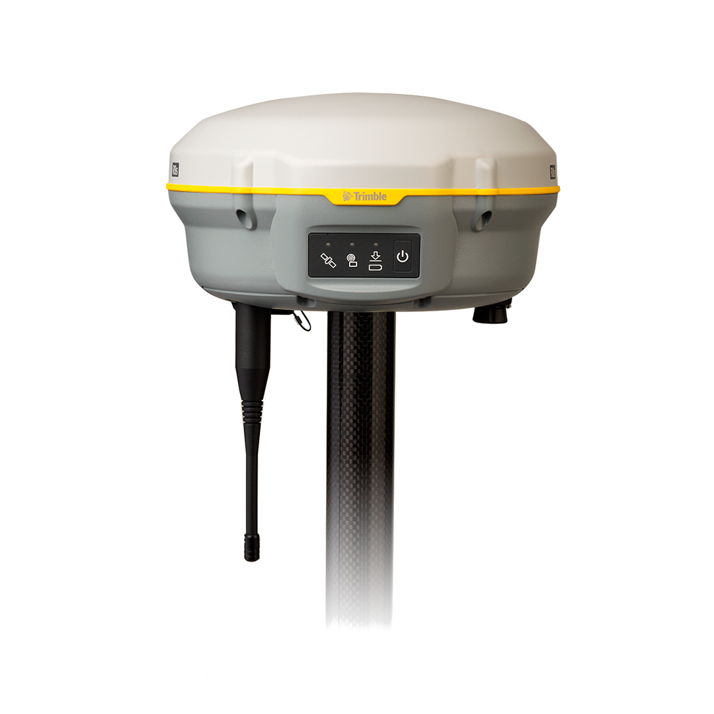

DGPS Trimble R8s

| DGPS Trimble R8s | |
|---|---|
| Localização: | Lab. 1.87 Edf. 7 |
| Responsável: | Margarida Ramires |
| Operador: | Utilizador |
| Princípio de Funcionamento: | Global Navigation Satellite System (GNSS) |
| Fabricante: | Trimble |
| Modelo: | R8s |
| Tipo: | DGPS |
| Website: | Trimble |
O Trimble® R8s GNSS Receiver é um recetor geodésico de elevada precisão concebido para aplicações de topografia, cartografia, monitorização ambiental e aquisição de dados geoespaciais. Baseado em tecnologia GNSS (Global Navigation Satellite System), o equipamento permite realizar levantamentos com precisão centimétrica através de técnicas de posicionamento em tempo real (RTK – Real-Time Kinematic) ou por pós-processamento, sendo amplamente utilizado em projetos de investigação, engenharia, monitorização costeira e gestão territorial.
O Trimble R8s integra numa única unidade a antena GNSS, o recetor, a bateria, os sistemas de comunicação e, opcionalmente, rádio UHF ou modem GSM, proporcionando uma solução compacta, robusta e adequada para utilização em condições de campo exigentes. A sua arquitetura modular permite configurar o equipamento como Rover, Base Station ou ambas as funcionalidades, podendo posteriormente ser expandido através da ativação de novas opções de software e hardware sem necessidade de substituir o equipamento.
Equipado com a tecnologia Trimble 360™, processador Maxwell™ 6 e até 440 canais GNSS, o R8s é capaz de rastrear simultaneamente sinais provenientes das constelações GPS, GLONASS, Galileo, BeiDou e QZSS (dependendo da configuração e licenciamento), assegurando elevada disponibilidade de satélites e excelente desempenho mesmo em ambientes parcialmente obstruídos, como zonas arborizadas, áreas urbanas ou falésias costeiras.
A comunicação entre o recetor e o controlador de campo é efetuada através de tecnologia Bluetooth®, permitindo uma operação totalmente sem fios. O equipamento suporta ainda registo de observações GNSS para pós-processamento, integração com redes RTK/NTRIP e utilização de rádios internos ou externos para transmissão de correções diferenciais. O controlo e processamento dos dados são realizados através do ecossistema de software Trimble Access™ e Trimble Business Center™, possibilitando a gestão completa dos levantamentos desde a aquisição até à produção cartográfica final.
Calendário / Disponibilidade
RequisitarPrincipais Aplicações
- Levantamentos topográficos de elevada precisão;
- Georeferenciação de pontos de amostragem;
- Cartografia ambiental;
- Monitorização costeira;
- Estudos de geomorfologia;
- Cartografia de habitats;
- Levantamentos geológicos;
- Apoio a levantamentos com drones (GCPs e pontos de controlo);
Principais Vantagens:
- Posicionamento centimétrico em tempo real (RTK);
- Elevada precisão e repetibilidade;
- Suporte para múltiplas constelações GNSS;
- Tecnologia Trimble 360™ com elevado desempenho de rastreio;
- Arquitetura modular e expansível;
- Integração com rádios UHF e redes NTRIP;
- Equipamento compacto, robusto e adequado para utilização em ambientes exigentes;
Específicações Técnicas:
| Específicação | Valor |
|---|---|
| Fabricante | Trimble Inc. |
| Modelo | R8s GNSS Receiver |
| Software | Trimble™ |
| Precisão Horizontal (RTK) | ±8 mm + 1 ppmm RMS |
| Precisão Vertical (RTK) | ±15 mm + 1 ppmm RMS |
| DGPS Horizontal | ±25 cm + 1 ppmm RMS |
| Precisão Estática Vertical | ±50 cm + 1 ppmm RMS |
| Taxa de Atualização | 1, 2, 5, 10 ou 20 Hz |